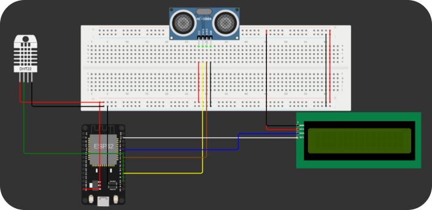

Tech OceanBlue
Saiba os detalhes da construção e funcionamento do FindBot!

Saiba os detalhes da construção e funcionamento do FindBot!

O FindBot pode ser construído utilizando as plataformas Arduino (menos custo) ou ESP32. Foram desenvolvidos dois protótipos baseados em cada uma das plataformas:
Arduino
ESP32

A tecnologia utilizada para a contagem é o sensor ultrassônico, muito utilizado para medir distância do sistema entre algum objeto. Em nossa solução, o sensor identifica quando existe algum resíduo em sua frente em uma distância de até 50cm do sistema, e a plataforma envia a informação de resíduo (sua localização e horário) para a base de dados central.

Além de enviar cada resíduo encontrado nos oceanos, o FindBot também mede a temperatura das águas para verificar se ele está em um nível acima, ou abaixo do normal. Essa informação é coletada através de um sensor de temperatura (DHT22) apontado para o oceano.